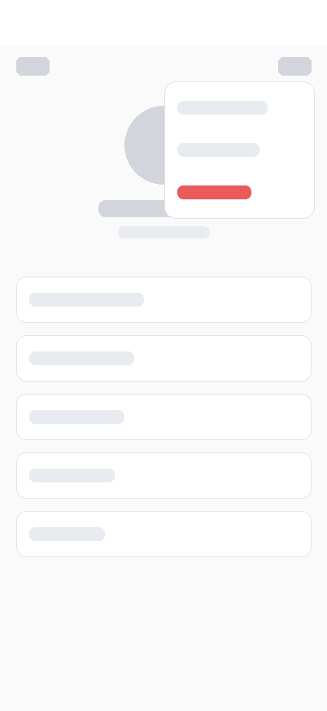

다른 사람 프로필에서 부방장으로 임명한다
❌ 실패시나리오 3개 · 통과 1 · 실패 1 · 미실행 1
두 번째 시나리오에서 그룹을 고르는 창의 제목이 잘려 「어느 그룹의 부방장으로 임명할」까지만 보였다.
다른 사람 프로필에서 부방장으로 임명한다
테스트 전 상태
- Bob2 가 PGA 알파·브라보의 방장, PGA 에코의 부방장이다
- 티나는 세 그룹 모두 멤버다
- 티나의 프로필 화면을 열었다
시나리오 1
⋯ 메뉴에 관리 항목이 보인다

- 만일⋯ 버튼을 누른다
- 그러면부방장 임명, 방장 넘기기, 그룹에서 내보내기가 보인다✅세 항목 모두 있었다.
- 하지만부방장 해제는 없다✅없었다.
시나리오 2
부방장으로 임명할 그룹을 고른다
- 만일부방장 임명을 누른다
- 그러면「어느 그룹의 부방장으로 임명할까요?」 제목이 다 보인다❌제목이 두 줄로 접히면서 둘째 줄 「까요?」가 가려졌다.
- 그리고목록에는 PGA 알파와 PGA 브라보만 나온다✅두 그룹만 나왔다.
시나리오 3
PGA 알파를 부방장으로 임명한다
- 만일그룹 고르는 창에서 PGA 알파를 고른다
- 그러면「PGA 알파」 부방장으로 임명했다는 안내가 뜬다
앞 시나리오의 결함을 먼저 고치기로 해서 진행하지 않았다. 창을 닫은 뒤에도 티나는 두 그룹 모두 멤버였다.
실행 정보
- 앱 실행
- 2026-09-24 22:05
- MCP 서버
- fitpal-mobile
- 시나리오 1
- tap_native_point 355,97 → find_widget 부방장 임명 1 · 방장 넘기기 1 · 그룹에서 내보내기 1 · 부방장 해제 0
- 시나리오 2
- tap_widget "부방장 임명" → find_widget PGA 알파 1 · PGA 브라보 1 · PGA 에코 0
- 시나리오 3
- tap_widget "취소" → 데이터베이스 PGA 알파 member · PGA 브라보 member